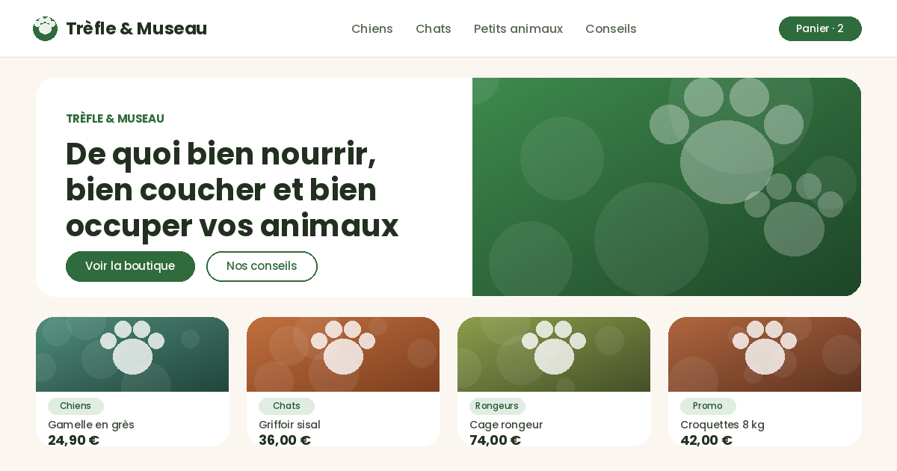
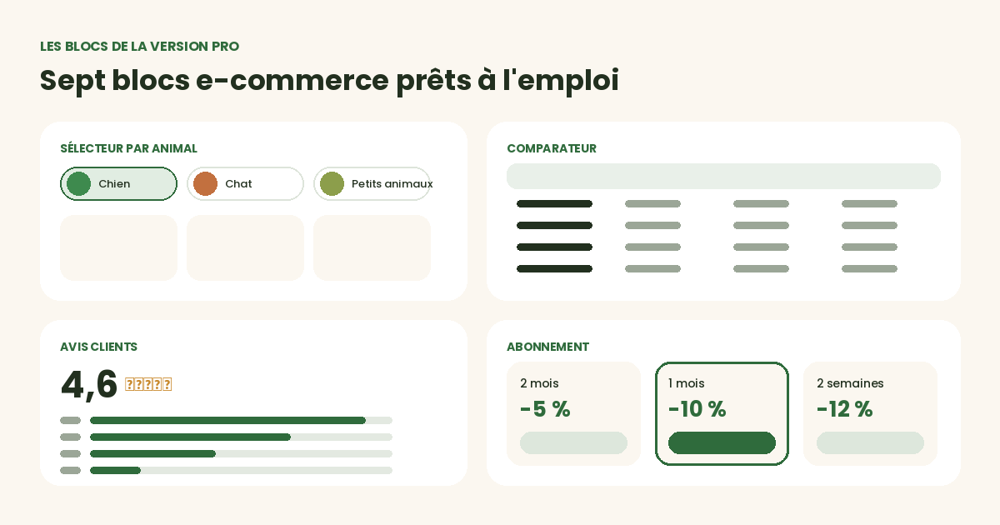
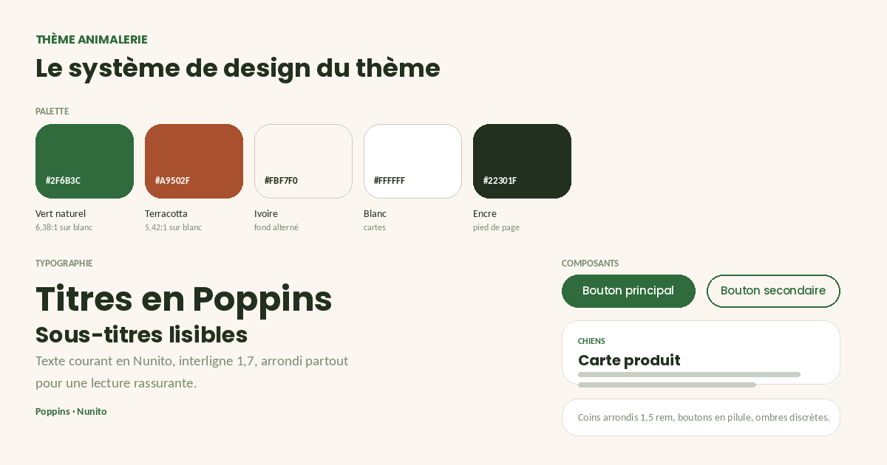

La fiche produit
Héritée de la version gratuite, avec l'encart de promesse et les arrondis du thème.


Trois onglets chien / chat / petits animaux qui basculent le contenu affiché sans rechargement de page.
Un tableau de caractéristiques dont on retire une colonne en décochant un produit.
Note moyenne, répartition par étoiles et quatre avis en cartes.
Un tableau de correspondance et l'encadré « comment mesurer », le duo qui fait baisser les retours.
Trois formules en cartes, dont une mise en avant. À relier au module Abonnements d'Odoo pour la récurrence réelle.
Trois cartes de conseil éditorial, pour occuper le terrain du référencement naturel.
Un encadré promotion avec badge, prix barré et produits associés.
L'habillage complet du panier et des étapes de commande, en cohérence avec le reste de la boutique.
Un en-tête de catégorie avec arguments de réassurance, suivi des blocs de conversion.
Une inversion complète des couleurs, activable par un bouton à poser dans la page ou automatiquement selon la préférence système du visiteur. Le choix est mémorisé dans le navigateur. Contrastes du thème sombre vérifiés au niveau AA.
Sélecteur par animal, comparateur, avis notés et formules d'abonnement.

Héritée de la version gratuite, avec l'encart de promesse et les arrondis du thème.
Palette, échelle typographique et composants. Les ratios de contraste indiqués sont ceux mesurés sur les couples de couleurs livrés par défaut.

La page /categorie-chiens réunit l'en-tête enrichi et sept blocs, créée à l'application du thème.
« Trèfle & Museau » est une marque inventée pour la démonstration : elle ne correspond à aucune entreprise réelle.
Une palette sombre s'ajoute aux deux palettes de la version gratuite.
Édité par DYONYSOS — conseil et développement Odoo.
Support et questions avant achat :
welcome@dyonysos.fr
https://dyonysos.fr
Toutes les images de démonstration sont générées par programme (dégradés, formes géométriques, compositions typographiques) : aucune photographie ni illustration tierce n'est incluse. Les contenus de démonstration sont fictifs.